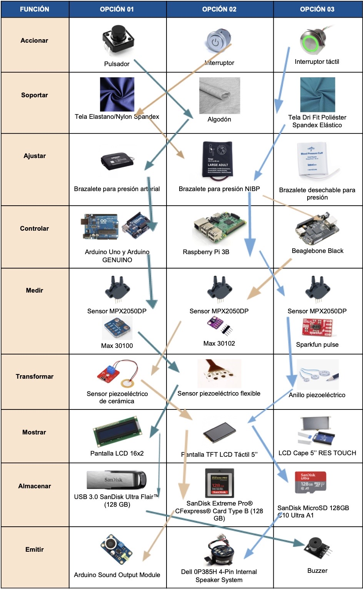
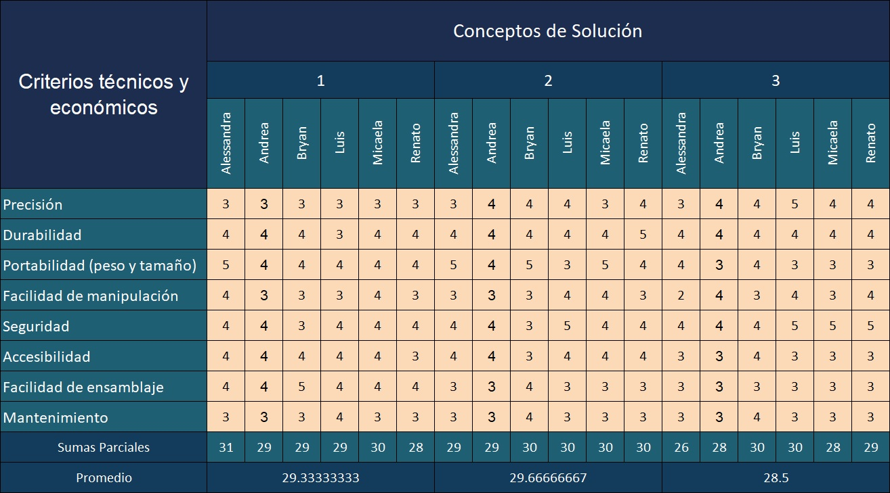

Tabla de requerimientos
Requerimientos

Identificacion de Entrada y Salida

Entradas
- Energía: Se refiere a la energía que el dispositivo requiere para funcionar.
- E. Eléctrica: para suministrar electricidad a los sensores y a la pantalla que proyectará los resultados de las variables correspondientes.
- E. Humana/ Mecánica: Para pulsar los botones de encendido de la pantalla
- Para activar el funcionamiento del conjunto de sensores.
- Señales: Señales visuales de encendido (activación y control iniciado por el usuario).
Salidas
- Energía:
- Calor producido por el calentamiento de la fuente de energía que alimenta el circuito.
- Ruido de la señal de alarma ante la alteración de los parámetros a medir.
- Señales: Señales visuales de apagado y de estado o inactividad, y señales de indicadores de las distintas variables que se van a medir.
Esquema De Funciones
Matriz Morfológica

Evaluación de Conceptos de Solución

Bocetos
Boceto 1

Consiste en una faja ajustable mediante una tira con velcro que cruza la parte superior del abdomen de la madre. La estructura posee un soporte lumbar (varillas de metal) para mantener una postura ergonómica ya que la mayor parte del peso ganado por una gestante está concentrado en la parte inferior de la pelvis junto con el aumento de volumen abdominal. Por este motivo se produciría una tendencia a inclinar el cuerpo hacia delante, lo cual la madre tiende a compensar inconscientemente con una posición hacia atrás de la parte superior del cuerpo por sobre la pelvis, restaurando su centro de gravedad, pero aumentando la lordosis del segmento lumbar [35]. Los sensores piezoeléctricos se encuentran dentro del material textil ubicados en la parte inferior del abdomen y sus cables están conectados al controlador. De forma similar, un sensor oxímetro y pulsómetro se encuentra incrustado dentro de la tela del lado izquierdo, pero con el punto de contacto expuesto al exterior. Al costado izquierdo de la faja también hay un estuche dentro de un bolsillo donde se encuentra una caja impresa en 3D en la que se protege la placa controladora y la pantalla. Adicionalmente, un interruptor para encender los componentes electrónicos, un emisor de sonido y una tarjeta de memoria se encuentran conectados al controlador.
Boceto 2
Este boceto se basa en brindar soporte lumbar a la gestante mediante un arreglo de tiras elásticas que ayudan a mantener una postura ergonómica. El sensor oxímetro y pulsómetro se encuentra en la parte superior dentro de la tela con el punto de contacto expuesto al exterior y los sensores piezoeléctricos están distribuidos en la cinta inferior de la faja. En la parte inferior izquierda está ubicado un bolsillo que contiene un estuche con el controlador por debajo y la pantalla arriba. En el mismo estuche habrán ranuras para el sistema de parlantes pequeños, la tarjeta de almacenamiento masivo y el interruptor encender/apagar.

Boceto 3

Consiste en una faja ergonómica de un material elástico (spandex) que permite que la gestante mantenga una posición adecuada de su columna. Además, el oxímetro y el sensor de pulso estarán conectados a una placa Arduino, esta última se ubicará en una pequeña caja impresa mediante tecnología 3D con su batería respectiva. Por último, contará con un pequeño buzzer (parlante), un micro SD para el almacenamiento de datos y un interruptor táctil para encender/apagar el dispositivo.
Referencias
[1]C. Coasaca Apaza, Diseño de un sistema automático para el llenado de pilas en bandejas de cartón. Pontificia Universidad Católica del Perú, Facultad de Ciencias e Ingeniería. Mención: Ingeniería Mecánica, 2013.
[2] F. Castillo Salinas et al., “Recomendaciones para la asistencia respiratoria en el recién nacido (IV). Ventilación de alta frecuencia, ex-utero intrapartum treatment (EXIT), oxigenador de membrana extracorpórea (ECMO),” An. Pediatría, 2017, doi: 10.1016/j.anpedi.2017.04.003.
[3]"Baumanometer with Python and Arduino UNO (ESP/ENG)", Arduino Project Hub, 2019. [Online]. Available: https://create.arduino.cc/projecthub/165265/baumanometer-with-python-and-arduino-uno-esp-eng-97f77e. [Accessed: 06- Oct- 2020].
[4] A. Chandrasekhar, C. S. Kim, M. Naji, K. Natarajan, J. O. Hahn, and R. Mukkamala, “Smartphone-based blood pressure monitoring via the oscillometric finger-pressing method,” Sci. Transl. Med., 2018, doi: 10.1126/scitranslmed.aap8674.
[5] C. Sequeira, L. Sánchez, L. Sandoval, S. Murillo and M. Sánchez, "Lumbalgia en el embarazo: abordaje para el médico general", Revista Clínica de la Escuela de Medicina de la Universidad de Costa Rica, 2019.
[6] C. Coasaca Apaza, Diseño de un sistema automático para el llenado de pilas en bandejas de cartón. Pontificia Universidad Católica del Perú, Facultad de Ciencias e Ingeniería. Mención: Ingeniería Mecánica, 2013.
[7] O. Sovero, "Diseño de sistema amortiguador para controlar desgaste del cable de acero en sistema de carguío de mineral de S.M.C.S.A. –Yauricocha", Bachiller, Universidad Nacional del Centro del Perú, 2017.
[8] Electromanía,Botón Pulsador 12x12x6mm. 2020.
[9] Arcade Xpress, Interruptor de Encendido On/Off LED iluminado de 22mm de diámetro, modelo KA22. 2020.
[10] RS delivery, Interruptor táctil RS Pro, Enclavamiento, Led Verde, IP68. 2020.
[11] Made in China,Nylon Spandex Lycra Knitted Fabric for Sportswear/Bikini/SwimWear. 2020.
[12] Punto algodón ORGANICO por metro | algodón ECO barato. https://ilovetelas.com/telas-eco/25-punto-algodon-organico.html (accessed Oct. 07, 2020).
[13] Alibaba,Dri Fit ojal textura 91% poliéster 9% Spandex elástico neto sándwich de malla de agujero de tela FDY. 2020.
[14] Hiraoka, Brazalete pequeño para tensiómetros OMRON. 2020.
[15] Shopify, Brazalete para presión NIBP. 2020.
[16] Berk Tree, Soft Cloth double tube bp cuff with no connector - disp, 2 tb, thigh, box of 5 - model mds 9715. 2020.
[17] Industrias Tezla, Arduino Uno R3. 2020.
[17] Amazon, Genuino UNO R3 - Placa microcontroladora. 2020.
[18] Amazon, Raspberry Pi 3 Model B - Tabla. 2020.
[19] Arrow, BeagleBone Black Rev. C - a community supported development board. 2020.
[20] Electrónicos Caldas, Sensor integrado de presión de aire, de alta precisión, rango 0 a 50 kPa (0 a 7.25 psi), medida diferencial, dos puertos, salida lineal, calibrado y compensado en temperatura, span total de la salida: 40 mV. 2020.
[21] Polaridad, MAX 30100 sensor de latido de corazón y oxímetro de pulso con comunicaciones I2C para wearables de salud. 2020.
[21] De Sensores, Sensor de frecuencia cardiaca MAX 30102 para Arduino. 2019.
[22] Sparkfun, SparkFun Pulse Oximeter and Heart Rate Sensor - MAX30101 & MAX32664 (Qwiic), 2020.
[23] Electromanía, Módulo Sensor de vibración piezoeléctrico de cerámica para Arduino. 2020.
[24] Piezo Tech,Thin and Flexible Piezoelectric Sensors. 2020.
[25] HBM, Anillo piezoeléctrico de medida de fuerzas PACEline CLP subminiatura, cargas nominales entre 3 kN y 80 kN. 2020.
[26] Amazon,B Blesiya Módulo de Pantalla LCD 16x2 Caracteres para Arduino Equipo de Instalación Electrónica. 2020.
[27] Máx electrónica,Pantalla LCD Táctil 5 Pulgadas 800x480 HDMI para Raspberry Pi. 2020.
[28] Digi-Key Electronics, Pantalla táctil LCD de 5" Pantalla BeagleBone Black Placa de expansión para evaluación de plataforma. 2020.
[29] Ripley, SANDISK PENDRIVE USB ULTRA FLAIR 128GB. 2020.
[30] Western Digital Online, SanDisk Extreme Pro® CFexpress® Card Type B. 2020.
[31] Memory Kings, SanDisk MicroSD 128GB C10 Ultra A1. 2020.
[32] Aliexpress, Módulo de salida de sonido Arduino Módulo de altavoz Módulo de Sensor de micrófono Sensor de sonido. 2020.
[33] Compupoint, Dell 0P385H 4-Pin Internal Speaker System. 2020.
[34] Robu, PCB Mounted Passive Buzzer Module. 2020.
[35] C. Sequeira, L. Sánchez, L. Sandoval, S. Murillo and M. Sánchez, "Lumbalgia en el embarazo: abordaje para el médico general", Revista Clínica de la Escuela de Medicina de la Universidad de Costa Rica, 2019.